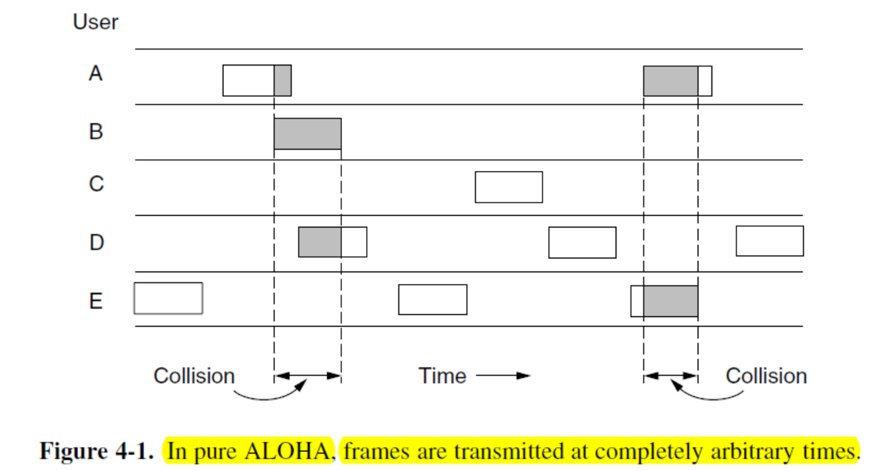
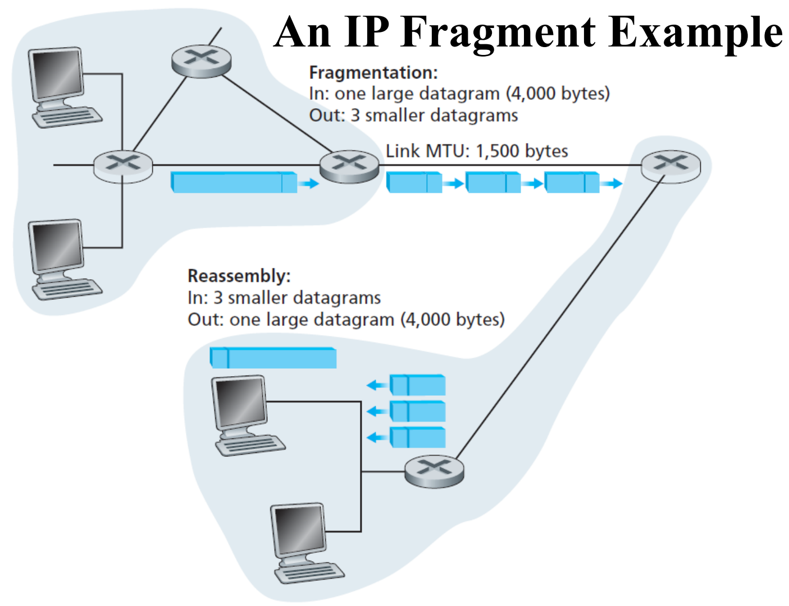

计算机网络
Introduction
2023 / 09 / 19
Network Hardware
按照传输技术分
Broadcast links 多播 multicasting
-
所有机器都需要借助有线 / 无线链路。广播的 ip / Mac 地址为全 1。初始的，未经分配的地址 ( 初始化地址 ) 为全 0。
-
Wifi 是一个典型的广播链路。
Point-to-point links 单播 unicasting
- 两点之间的可选的路径很多，需要借助算法选择。
按照规模分
分类的标准为距离。

Communication Links
不同种类的线传输速率不同。( 无线也是一种传输介质 )
Different links can transmit data at different rates, with the transmission rate of a link measured in bits/second
| Text Only | |
|---|---|
1 2 3 4 | |
PAN
Personal Area Network，个人设备之间组成的网络。
由于 2.4 Ghz 左右为 ISM 频段，常用于个人设备之间的无线连接 (Wifi)。( 带宽高于 蓝牙 )
LAN
Local Area Network，局域网。
有线无线都有 dynamic / static 的设计。static 静态分配，dynamic 动态分配。
static：有 TDM ( 时间分配 )，FDM ( 空间分配 ) 等。
dynamic：按需分配。有中心化 (centralized)，去中心化 (decentralized) 两种。
其他网络
Metropolitan Area Network，城际网。
Wide Area Network，广域网。有两种实现，VPN 和 ISP。
- VPN，Virtual Private Network。直接在现有网络上架设。
- ISP，Internet Service Provider。申请线路连接。
The cellular telephone network is an example of a WAN that uses wireless technology
网络举例

由 hierarchy 到 distribute，增加了冗余，增强了鲁棒性。

移动网络

UE 用户设备。eNodeB 基站。S-GW，P-GW 网关，通向不同的网络 ( 如，通信网络、互联网 )。
E-UTRAN (Evolved UMTS Terrestrial Radio Access Network)，连接用户与基站。
EPC (Evolved Packet Core)，核心网络。HSS (Home Subscriber Server)，通信卡管理。
Frequency Reuse
为防止相互之间频段干扰，将覆盖区域分为一个个小六边形区域。相隔较远的两个六边形可以复用相同的频段。
Switching
- Packet Switching。无需连接，只需包传输。如互联网。
- Circuit Switching。需要连接。如打电话。
WLAN
使用 ISM 频段，组成局域网。
- multipath fading。无线传输中，无线电波通过多条路线达到设备，生成了波的相消或增强。
- 为克服上述问题，可以使用不同的频率传输相同的数据。可以进行重复的传输。跟踪天线到天线之间的路径传输 (MIMO)。
ALOHA 算法使用随机的间隔避免传输的冲突。( 降低冲突的概率 )
网络协议
Network Protocols
设计目标
可靠 Reliability。需要能够处理部分节点宕机、产生错误的情况。
资源分配 Resource allocation
进化 Evolvability。使用分层结构，封装网络内部的信息，使得最新的技术可以不断得到应用。
安全 Security。
协议层级
Network architecture: a set of layers and protocols
Protocol stack: a list of the protocols used by a certain system, one protocol per layer。
协议定义了传输的格式，顺序，接受信号之后的处理。
 |
 |
数据自上而下得到处理 ( 例如，layer4 为 layer5 提高服务 )。最后在物理媒介上得到传输。每层提供的服务可以是 connection-oriented 也可以是 connectionless 的。

协议，同一层级。服务，不同层级之间。
They are free to change their protocols at will, provided they do not change the service visible to their users
函数的 I/O 不可变，但函数的具体实现可变。
参考模型
OSI
一共有 7 层结构。
The physical layer，The data link layer，The network layer，The transport layer，The session layer，The presentation layer，The application layer
模型本身不是某一网络的架构，只是参考。

TCP / IP
一共 4 层。
The TCP/IP model supports only one mode in the network layer (connectionless) but both in the transport layer.
Metric Units
网络延迟 / 损失 / 吞吐
- Processing delay：包的处理与读取。
- Queuing delay：排队传输。
- Transmission delay (or the store-and-forward delay): L (the length of packet in bits) / R (the transmission rate of a link)
- Propagation delay is the distance between two routers divided by the propagation speed.
线路不完美，可能丢包造成损失。
网络的吞吐量由最慢处决定。
IPv4：32 bits；IPv6：128 bits；Mac：48 bits
Physical Layer
2023 / 09 / 26

不同的 physical channel 会影响：吞吐、延迟、错误率。
理论基础
傅里叶级数
对于一个周期性信号 \(g(t) = g(t+nT_0)\)，光滑、连续。
\(g(t)= \sum^{+\infin}_{n = -\infin} a_ne^{j2\pi f_0 nt}\) 其中 \(a_n\) 是一系列的系数 ( 不一定是实数 )，\(f_0\) 为 \(1/T_0\)。
也可以得到 \(a_n = \frac{1}{T} \int_T g(t)e^{-j2\pi f_0 nt}dt\)
使用欧拉公式展开可以得到：\(g(t) = C+\sum_{n=1}^{\infin}2A_ncos(2\pi n f_0 t) + \sum_{n=1}^{\infin}2B_nsin(2\pi n f_0 t)\)
其中 \(A_n=\frac{1}{T}\int_T g(t) cos(2\pi n f_0t)dt\)，\(B_n=\frac{1}{T}\int_T g(t) sin(2\pi n f_0t)dt\)，\(C_n=\frac{1}{T}\int_T g(t)dt\)
傅里叶级数中的积分有一些性质如下：

Bandwidth-limited Signals
任何 channel 下信号都会衰减。不同的 channel 对不同频率的信号的衰减幅度不一致。
对某种线材，频率在 0~ \(f_c\)之间的信号衰减可以接受，\(f_c\) 为截止频率。
可以以较小衰减传输的频率的宽度 ( 范围 ) 称为带宽。

Baseband signals vs. Passband signals
- Baseband signals，基带信号，run from 0 up to a maximum frequency。
- Passband signals，shifted to occupy a higher range of frequencies, such as in the case of all wireless transmission。
调频，此处的 \(f_c\) 为载波频率：

bandwidth vs. maximun data rate
- EE 中 bandwidth 单位为 Hz，计算机科学中为 bits/sec。
- 频率理论上可以无限高，但是相应的衰减可能增加，对于接收端的要求也会变高。所以 Data Rate 与物理信道的模拟信号高度相关。
The Maximum Data Rate of a Channel
-
Channel Capacity：在给定条件下，数据在给定通信路径或信道上传输的最大速率。
-
Data rate (bps)：If the binary-input and binary-output channel is noise free, the data rate will be 1bps.
- Bandwidth：由发射的机制 ( 防止干扰 )，以及物理介质的性质决定。
- Noise：会影响数据传输的速率。
- Error rate：传输错误的概率，将 0 传成 1，1 传成 0。
Nyquist Bandwidth
无噪声情况下的符号速率。
\(C = 2B\) ( 一共只有两种电平状态 )，B 为带宽，C 为 Channal Capacity。\(C = 2Blog_2V\) (V 意为不同的信号以及对应的电平状态，例如若一次传输 2bits，就需要 4 种电平来表示 )。
香农
- data rate 越高，噪声影响的 bits 越多。
- 发射能力越高，noise 的影响最小。
Shannon Capacity：\(C = B log_2(1+SNR)\)，只考虑白噪声 ( 高斯噪声 )，不考虑衰减、延迟、脉冲噪声。
其中 \(SNR_{db} = 10 log_{10}(signal\,power/noise\,power)=10log_{10}SNR\)，SNR 为信噪比。
带宽越高，SNR 越低，但接受到的 noise 越多。
Transmission Media
Guided or Wired
-
固定储存 ( 硬盘传输 )。
-
双绞线：这种设计可以提高鲁棒性，因为信号通过两根线的电压差来表示，噪声的干扰就比较小 ( 影响是同步的 )。可以传输数字信号和模拟信号。带宽由导线的粗细和长度决定。
-
同轴电缆：常用于有线电视、城域网，带宽高于双绞线。
-
Power Lines，交流电线：可以传输一些低频的信号，但主要用于输电。
-
光纤：多模光纤 ( 含多根光纤 )，单模光纤。带宽高，不受电涌、电磁干扰、停电、腐蚀性化学品的影响，重量较轻。易损。

Wireless
- UWB (Ultra WideBand)：sends a series of rapid pulses, varying their position to communicate information. The rapid transitions lead to a signal that is spread thinly over a very wide frequency band.
- 微波通讯：>100MHz，直线传播，需要对齐，受环境 ( 如水汽 ) 的影响。很多时候需要中继站。
- 红外通讯：有方向性、配置简单，不能穿过固体障碍物，不需要国家的批准。
卫星
与线缆通讯的优劣：
- 卫星通讯可以覆盖更广的地域，环境适应性强，对基础设施的依赖性低。
Digital Modulation and Multiplexing
数字调制
将数据比特转化为信号。
传输信号有两种方式：
-
基带传输，使用有线通道传输。信号占据可用频段区间的全部。
-
通带传输，使用无线和光纤通信。信号只占据载波信号频段附近的频段。
- 有调幅、调频、调相位三种调制方式。
多路复用 multiplexing：一根线传输多种信号。
基带传输
- (b) NRZ 正电平表示 1，负电平表示 0。接收端也根据此进行解码。信号会有衰减和失真，解码时会解码到最接近的比特上。
The bit rate = the symbol rate \(\times\) the number of bits per symbol
一个 symbol 中可能会有多个 bit，这样可以提高带宽的使用效率，但对于接收端的要求也随之提高。
- (d) 曼彻斯特编码 ( 许多以太网技术中采用 )。接收端需要知道一个 symbol 何时结束，下一个 symbol 何时开始。使用一个独立的时钟信号与传输信号进行 xor。 0 - a low-to-high transition；1 - a high-to low transition。
- (c) NRZI (USB 中使用 )。
- Scrambling，一种信号的加密技术，与某一信号进行 xor 使之更像白噪声，在接收端再次 xor 还原。
- Balanced signals (bipolar encoding)，短时间内平均的电平为 0，近似为直流电而不需要直流电元件，可以减少直流元件对于信号的衰减。( \(\pm\)1 表示 1，0 表示 0)
通带传输
一般需要较高的传输频率减小波长。
三种调制的方式：
- 调幅：振幅为 0 表示 0，其余情况为 1。
- 调频：频率的疏密以区分 0，1。
- 调相位：信号变化的节点改变相位。

可以结合调相位和调幅进行更高效率的传输。

相当于一个 symbol 4 bits ~ 64 bits。
不使用同心圆是由于只是用轴向的振动更简单。
以上情况在编码时使用 Gray code，为最大程度地抵消信号传输地损失，最多发生一位地传输错误。

FDM (Frequency Division Multiplexing)：将频段划分给不同的信号进行传输。
OFDM (Orthogonal FDM)：相比 FDM，由于信号能量主要集中于传输频率附近，频段之间可以部分重叠。距离传输频率较远的频率对于其他频段相当于噪声。
TDM (Time Division Multiplexing)：循环机制，每个用户都有一段时间占有全部的带宽。
必须同步。
CDM (Code Division Multiplexing)：不同用户的信息编码成唯一的码（码片或序列），然后将这些码片混合在一起传输，最后在接收端使用正确的码片来解码并还原原始信息。这种技术允许多个用户同时共享相同的频谱带宽，并且能够在同一频段上同时传输和接收数据，而不会干扰彼此。(m chips)

可以根据这个分析出传输的代码段有哪些。
三个通讯例子
PSTN

Local loops: telephone modem, ADSL, fiber
- Telephone modems：模拟信号和数字信息之间的转换器。
Trunks (digital fiber optic links connecting switching offices) - main consideration problem is multiplexing (FDM and TDM)
Switching offices (where calls are moved from one trunk to another) - two switching ways

Nyquist Sampling：使用原始频率两倍的频率进行采样，防止混叠。高于这个频率，不能获得更多信息，低于这个频率，不能获得足够的信息。没有 bandlimited 的信号不能正确采样重建。例如电话的频率约为 4k Hz，则采样频率需要是 8k Hz，如果有 8 bit 进行传输，则需要的 modern 为 64 kbps。
Local Loop
电话线改造后 ( 去掉滤波器 )，传输的机制如下：
-
The available 1.1 MHz spectrum on the local loop is divided into 256 independent channels of around 4 kHz each.
-
The OFDM scheme is used to send data over these channels, though it is often called DMT (Discrete MultiTone) in the context of ADSL.
-
Channel 0 is used for POTS (Plain Old Telephone Service)
-
Channels 1-5 are not used to keep the voice and data signals from interfering with each other.
-
Of the remaining 250 channels, one is used for upstream control and one is used for downstream control. The rest are available for user data.
Trunks
- 使用数字信号非模拟信号 ( 不是语言 )。速率较电话线块。
- 需要 multiplexing，使用 FDM 或者 TDM。
SONET/SDH (Synchronous Optics NETwork)：a standardization of optical TDM system。
WDM (Wave-length Division Multiplexing)。
Switching
分为 circuit switching 和 packet switching。
circuit switching 需要建立专门的 end-to-end 链路。
packet switching 无需建立专门的链路。路由器负责接收和转发数据包。数据包的大小有限制。存在排队延迟和阻塞。
 |
|
|---|---|
Data-link Layer
2023 / 10 / 17
 |
|
|---|---|
Overview
数据链路层通过物理层的服务接收发送 bits。
数据链路层的树妖功能：Framing，错误处理，flow control。
- Framing：封装离散的帧。
- 错误处理 ( 检测以及处理 )：根据计时器和序列号 (ACK) 确认数据是否得到了正确地接收。
- Flow control：防止接收端数据超载。
- Feedback-based flow control (the data link layer): receiver gives sender permission.
- Rate-based flow control (the transportation layer): limit the data rate at witch the sender may transmit data.
实现位置
数据链路层处于的位置：

实际设备中的实现路径：

数据链路层通常在网络适配器 ( 网卡 ) 上实现。
服务
- Unacknowledged connectionless service：主要用于出错率较低的实时通讯中 ( 以太网 )。
- Acknowledged connectionless service：无链接，但是需要回函确认，适用于不可靠的信道 (802.11 WiFi)。
- Acknowledged connection-oriented service：建立专门的链接 ( 需要经过建立、传输、释放三个过程 )，适用于长距离、不可靠的传输 ( 卫星通讯 )。
Framing
从 NetWork Layer 在中获取 packet，封装到帧中传输。
物理层存在噪声，为减小衰减，物理层会加入部分冗余信息。
Data-link layer 会生成 checksum 用于校验。接收端会重新计算、校验。出错后处理 ( 回传错误报告或丢弃 )。
找到帧的开头较为困难，需要有一个好的设计，尽量提高带宽。
有四种标识的方法：
-
Byte count：在 header 中的特定字段表示帧的字节数。
-

-
Flag bytes with byte stuffing：插入一个特殊的字节解决。插入 flag (PPP)。
-

-
但 data 中也可能出现 flag 字段，解决方案是在异常的 flag 前，插入 ESC。
-

-
Flag Byte with Bit Stuffing：在 bit 的层级上实现区分 (USB)。
-
例如，flag 为 0x7E ( 连续的 6 个 1)。发送端会在核心数据部分检测到 5 个连续的 1 后自动加一个 0，方式错误。接收端则会相应去除连续 5 个 1 后的 0。
-

-
Coding Violations：前两种方法导致帧的长度与内容有关。物理层也会有一些冗余。目前的数据链据经常采用混合的方法。，并使用编码反转的位置作为 frame 的开端。
-

Errors
有两种策略：
- 携带足够的冗余信息，即使出错也可以自行推断出正确的信息。
- 携带一定的信息，能发现出错，但需要回传。
但是这两种策略都不能保证传输的正确性，因为噪声也可能影响冗余 bits。
- errors 可能由极端值导致单 bit 位失效。也可能是随机产生的。
Error-Correcting
- Hamming Distance：两个等长二进制数有几位 bits 不一样。
- 对于 n 个二进制数码本，两两配对，找到最小的 hamming distance，即整个码本的 distance。
n-bit codeword：n = m ( 实际传输 ) + r ( 冗余 )。
code-rate：m / n。
如果需要检测 d bits 的错误，码本的 hamming distance 至少为 d + 1。
如果需要纠正 d bits 的错误，码本的 hamming distance 知道为 2d + 1。
- 例如一个码本——0000000000, 0000011111, 1111100000, 1111111111，distance 为 5，可以检测 4 位错误，纠正 2 位错误。
- 例如一个码字出现错误变成 0000000111，可以找出最接近的原 codeword：0000011111。
- 但如果 上述的错误 codeword 是由 0000000000 转变而来，则不能正确纠正。
如果需要纠 1 bit 的错误，m-bit 的 codeword，加上 r-bit 的冗余，变为 n-bit 的 codeword，hamming distance 为 1，需要满足：

Hamming code：纠正 1 位的错误，具体可以参考以下网址👇
具体来说，就是在 2 i 位上添加奇偶校验码。
例如，如果有 4 位校验码，分别在 0001，0010， 0100，1000 位上，这 0001 负责所有最后一位为 1 的校验 (1001，0111，0011，0101，1011)，以此类推。可以在出错时，对相应的位进行奇偶校验。如果校验出错，则对应位为 1 ( 如果 0001 对应的校验出错，则第一位上为 1)。最终直接可以推断出出错的 bit 的位置。
Error Detection
奇偶校验：相对 hamming code 冗余更少，在单纯的检测上效率更高，但需要重传，也存在一些困难。
Interleaving：对齐不同的 channel 进行奇偶校验，可以检测连续的错误。

An Two Dimensional Even Parity Example：单信道、多信道都进行奇偶校验，可以定位错误。

Checksum：对数据进行加和，注意需要溢出为加到加和值上。

CRC：具体可以参考以下网址👇
协议
- Utopian Simplex Protocol：理想化、一端发送，一端接受。
- Simplex Stop-and-Wait Protocol for an Error-Free Channel：考虑了 flooding 问题，回传一个反馈确认信息是否收到。
- Simplex Stop-and-Wait Protocol for a Noisy Channel：考虑了噪声，增加一个计时器，如果 frame 错误，直接丢弃不反馈，时间超出后，发送端重传。但可能会造成重复，原因可能是 ACK 信号丢失，回传信号未到达。为避免重复：
- 计时器需要设置合适的时长。
- 为每一个 frame 增加一个序列号。
- 序列号只需要 1 bit 即可 ( 前后错开就不会重复 )。
| normal | ACK is lost or arrived after the timeout | Loss or damaged and retransmission | ACK arrived after the timeout |
|---|---|---|---|
 |
 |
 |
Sliding Window Protocols
- Piggybacking ( 驮运 )：ACK 信号勾连在下一个即将发送的 data frame 上发送。
在所有的 Sliding Window 协议中，sender 会维护一组数据帧的序列号 ( 落在 sending window 中 )。发送端也会保留尚未确定、尚未发送的数据帧，因为这些数据可能会传输失败或损坏 (sender window)。发送端存在一定大小的缓冲区，当缓冲区被填满时，数据链路层会关闭从网络层来的数据防止溢出 (Flow control)。
接收端也有 receiving window，只接受落在窗口中的数据帧并存入缓冲区，不落在窗口中的帧将被丢弃。如果序号等于窗口下沿的数据帧到达，会被传给网络层并将下沿加 1 ( 旋转 1)。如果窗口大小为 1，则只会按顺序接受数据。

有三种双向的协议：
- A One-Bit Sliding Window Protocol (stop-and-wait)：sending 和 receiving 的窗口大小均为 1。序号只用 0 和 1 表示。
红线指未收到 ACK 进行了重发。* 表示接收到了希望得到的数据帧并递交到网络层。对 A 左侧为 ACK，右侧为序号，B 则正好相反。
A Protocol Using Go Back N：可以一次发送多帧数据不用等待 ACK。需要解决两个问题：
- 如果传输的一批数据帧中出现错误如何处理。
- 接收端如何处理剩下的正确的帧。

若接收端的窗口大小为 1，sender 发送了 0~8 帧，第 2 帧失效导致 3~8 帧丢失，需要重传 2 ~ 8 帧。
若接收端的窗口大小 > 1，第 2 帧失效，继续接收 345 帧，会产生 ACK 的跳变。此处的 ACK 表示成功递交了几个数据帧。
- Sliding Window Protocol Using Go Back N (revceiving window size 为 1)
 |
|
|---|---|
| Text Only | |
|---|---|
1 2 3 4 5 6 7 8 9 10 11 12 13 | |
Go Back N 在出错率低的情况下工作尚可，但若出现错率高则需要大量的带宽用于重传。
- A Sliding Window Protocol Using Selective Repeat (revceiving window size > 1)
未防止缓存占满导致死锁，设置辅助的 ack_timer 进行确认，发送一个独立的 ack 信号。
\(sending\, window\,size=\frac{MAXSEQ + 1}{2}\)
Example Data Link Protocols
主要介绍 Point-to-Point 协议 (PPP)。
- 需要提供 framing 功能，区分数据帧的始末。
- 需要提供 LCP (Link Control Protocol)，对线路的使用进行控制，bring up / bring down / testing...。
-
需要提供 NCP (Network Control Protocol)，协调使用的网络层协议。
-
Packet over SONET
一种物理层的协议。
对应的 PPP frame 格式为：

需要插入 ESC (0x7D = 0x7E xor 0x20，bit stuffing) 保证传输的正确。
Note
The Payload field is variable length, up to some negotiated maximum. (default length of 1500 bytes) The Checksum field which normally is 2 bytes

- **ADSL ** (Asymmetric Digital Subscriber Loop)
一种物理层协议。
ATM：ATM (Asynchronous Transfer Mode) is a link layer that is based on the transmission of fixed-length cells of information.

对应的 AAL5 frame 的格式为：

不需要地址标识符，the virtual circuit identifier 会将数据帧带到指定的位置。此外：
-
It has a trailer that gives length and has a 4-byte CRC for error detection. The CRC is the same one used for PPP and IEEE 802 LANs.
-
The payload of the AAL5 frame has padding to be a multiple of 48 bytes so that the frame can be evenly divided into cells.
-
The protocol field indicates to the DSLAM at the far end whether the payload is an IP packet or a packet from other protocol such as LCP.
MAC sublayer
 |
|
|---|---|
2023 / 10 / 31
The Channel Allocation Problem
Static channel allocation
例如：FDMA - 分频分配。
但存在问题：某一用户不使用时，信道就没有得到充分利用。需要 Dynamic channel allocation。
-
Preliminary Queueing Theory
-
系统最大速率为 C。R 表示需要的平均速率。
-
若 R < C 系统可以处理。但若 R > C，则会产生一些问题。
-
排队理论中需要注意两个变量 the arrival times、the service times。
-
对于第 n 位顾客 \(C_n\)，\(\tau_n\) 为 arrival time，\(x_n\) 为 service time，interarrival time \(t_n = \tau_n - \tau_{n-1}\)。
-
\(\tilde{x}\)、\(\tilde{t}\) 表示随机变量。
-
\(A(\tilde{t} \le t) = A(t)\)，\(B(\tilde{x} \le x) = B(t)\) 进行概率的表示。
-
\(E(\tilde{t}) = 1 / \lambda\)， \(E(\tilde{t}) = 1 / \mu\)，其中 \(\lambda\) 表示平均 arrival time。
-
这个问题可以被描述为：A/B/m。其中 m 为服务器数量，A 为 interarrival time 的分布，B 为 service time 的分布。A，B 有六种可能：

-
对于 G/G/m，定义 \(\rho\) 为利用系数，有 \(\rho = \frac{\lambda \tilde{x}}{m}\)，\(\rho\) 越接近 1，队列的等待时间越长。
-
有 \(T = \tilde{x} + W\)，其中 W 为必定等待时间。
-
Little’s Result：\(\overline{N} = \lambda T\)，The average queue size \(\overline{N}_q = \lambda W\)，在 G/G/m 中，有 \(\overline{N}_q = \overline{N} - m\rho\)。
-
对于 M/M/1 的情形，\(\lambda\) 为泊松分布，有 \(T = \tilde{x} + W = 1 / \mu + \frac{\rho/\mu}{1-\rho} = \frac{1 / \mu}{1-\rho}\)。
-
在容量为 C 的 FDMA 中有：

分频分为 N 份之后有：
Dynamic Channel Allocation
有五点假设：Independent Traffic、Single Channel、Observable Collisions、Continuous or Slotted Time ( 传输可以从任意时间开始，或只能从时钟间隔时开始 )、Carrier Sense or No Carrier Sense ( 可否判断信道是否繁忙 )。
-
ALOHA
-
用户向中央计算机发送数据，可以分为 pure 和 slotted 两种类型。
-
pure
-
中央计算机接收到某数据后，广播到所有的计算机，故计算机可以判断自己的帧是否已通过。
-
若某帧遭到了损毁，发送发等待一段随机的时间后重新发送。

-
效率如何？

-
slotted，将时间分为一段段时间间隔。frame 发送只能间隔的起点发送。每隔一段时间向各个主机发送一个信号表示时间间隔的开始。
由于 ALOHA 没有 carrier sense，效率不高，容易产生 collision。
- 1-persistent CSMA
- 一旦 sender 检测到信道为空的话则立即发送数据。持续不断监测。
- Nonpersistent CSMA
- 每隔一段随机的时间监测。
- p-persistent CSMA
- 建立在 slotted 的基础之上。当 slot 空闲时，有一定的概率 (1-p) 延迟到下一个 slot 发送。有 p 的概率会发送。

Collision Detection 也可以提高效率。发送的过程中，同时也在检测 frame 的状态。若 frame 与初始状态发生改变，则可以说明产生了 collision。以下为一些 Collision Free Protocols：
- A Bit-Map Protocol -- Reservation Protocol

- 若要发送，sender 在自己的 bit map 上的 bit 置 1。
-
但 sender 多时，轮询时间长，开销大。
-
Token Passing
-
只有拿到令牌 token 之后，才能发送。token 在不同的状态之间传递。

-
一些站点需要将 token 拿出 token ring。
-
Binary Countdown
-
希望发送信息的 sender 广播自己的 address。地址之间进行 or 操作，级别最高的 sender 先发送。
在 low load 的情况下需要追求低时延 (ALOHA，collision sense)，high load 的情况下需要追求高利用率 (Collision Free)。
-
Limited-Contention Protocols
-
结合了两种类型的协议的优势。
-
每个信道都以 p 的概率获取信道。若有 k 个 sender，成功获取的概率为 \(kp(1-p)^{k-1}\)。

-
可以将 sender 分组，group 0 争夺 slot 0，group 1 争夺 slot 1 等。
-
The Adaptive Tree Walk Protocol
-
基于 Limited-Contention Protocols，进行以下的树状的分组：

- 若产生 collision 分为两组，一组争夺下一个 slot，另一组争夺后一个 slot。
Wireless LAN Protocols
相比有线传输更加复杂。例如 A、C 同时向 B 发送数据，但 A 由于有感知的范围，无法检测 C，从而发生 collision (The Hidden Terminal Problem)。另一种情况，C 向 D 发送，B 向 A 发送，但是 BC 互相检测到发送状态，错误检测到了冲突 (The Exposed Terminal Problem)。
 |
 |
|---|---|
此外，无线网络中 sender 发送数据时几乎不能接收信号 (Nodes Cannot Hear while Sending)。
解决方案：MACA
-
A sender node transmits a RTS (Request-To-Send, with frame length)
-
The receiver replies with a CTS (Clear-To-Send, with frame length)
-
Sender transmits the frame while nodes hearing the CTS stay silent
- Collisions on the RTS/CTS are still possible, but less likely.

 |
 |
|---|---|
Ethernet
帧结构

前导码 preamble，8 bytes，用于发送端接收端时钟同步。前 7 bytes 为 10101010，最后一个 byte 为帧开始界定符，为 10101011。
源地址、目的地址此处均为 MAC 物理地址，MAC 地址为 48 bits，6 bytes。MAC 地址全 1 为广播。48 bits 中前 24 位为 IEEE 分配给网卡厂商，后 24 位为网卡厂商分配的特定的地址。
区分 DIX 和 IEEE 802.3 主要以 Type 和 length 为区分。Type 指定了后续 Data 要交由何种协议处理，如 0x800 为 IPv4。length 则一定小于等于 0x600。
数据为 46 ~ 1500 bytes ( 包括 Data 和 pad)。由于 CSMA / CD 算法的限制，除去前导码，以太网帧至少为 64 bytes。
最后 4 bytes 为 CRC 校验码。
Performance
假定恒定有 k 个 station 希望发送，一个 station 拿到信道的可能为 p。
故信道被使用的概率为 \(A = kp(1-p)^{k-1}\)，争用期落在 j 个 time slot 中的可能为 \(A(1-A)^{j-1}\)。
故 time slot 的期望为 \(\sum^{+\infty}_{0}jA(1-A)^{j-1}=1/A\)，若时间间隔为 \(2\tau\)，争用期时间为 \(2\tau /A\)。假设帧平均用 P 秒传输。则有：
若 \(P = F /B\)，F 为 frame 长，B 为带宽。有信道效率为 \(\frac{1}{1 + 2BLe/cF}\)，L 为线缆长度，c 为光速，A 为 1 / e。
分类
Hub：集线器，只是将几个线缆连接在一起，不增加容量。内部相当于一根 cable 的速率。会将数据输出到所有端口。
Switch：交换机，有 high-speed backplane，连接所有端口。只需将数据输出到目的地端口。
Warning
交换机中每个端口有自己的碰撞域，但集线器中所有端口处于同一个碰撞域中。
Note
以太网同时是物理层和数据链路层的规范。
Fast Ethernet：允许通过集线器或交换机进行传输。
Gigabit Ethernet：使用点对点来链路。分为全双工和半双工两种模式。
802.11 WiFi
可以分为两种模式：In infrastructure mode，通过 AP 连接；Ad hoc network，分布式互联。
802.11 的数据链路层可以分为两个子层：
- MAC (Medium Access Control) sublayer：分配信道；
- LLC (Logical Link Layer)：隐藏 802 协议的差异，向网络层封装。
使用 2.4 Ghz 和 5 Ghz 进行传输。
802.11 MAC Sublayer Protocol
难题：
- 半双工：无法同时发送接收数据。
- 有限范围：有的站无法监测或无法避开。
使用 CSMA / CA 协议：Channel sensing before sending；Exponential backoff after collision。
相较于以太网，802.11：
- starting backoffs early helps to avoid collision。
- acknowledgements are used to infer collision because collision cannot be detected。
为消除哪个 station 正在发送数据的协议，802.11 将信道传感分为 physical sensing and virtual sensing。
-
Physical sensing：空闲则传输，冲突等待随机的时间后回退。用于传输 RTS。
-
virtual sensing：
-
Scenario: A wants to send to B. C is a station within range of A. D is a station within range of B but not within range of A.
- C----A----B----D
-
A sends RTS frame to B to request permission, B sends CTS frame back to grant permission. Then A sends data, and starts an ACK timer.
-
C receives RTS frame, assert virtual channel busy, indicated by NAV(Network Allocation Vector)
-
D hears CTS, assert NAV
-
Note: the NAV signals are NOT transmitted; they are just internal reminder to keep quiet for a certain period of time.
帧结构
前 30 字节为 MAC 首部。其中有 4 个 MAC 地址，第四个用于自组网络。根据 To DS 和 From DS 信号，三个地址分配如下：
| To DS | From DS | 1 | 2 | 3 |
|---|---|---|---|---|
| 0 | 1 | 接收 = 目的地址 | 发送 = AP 地址 | 源地址 |
| 1 | 0 | 接收 = 目的地址 | 发送 = 源地址 | 目的地址 |
帧主体不超过 2312 bytes。
Data Link Layer Switching
-
We can use bridges (or switches) to join multiple physical LANs into a single logical LAN.
-
We can also treat one physical LAN as multiple logical LANs, called VLANs (Virtual LANs)。
physical LAN
Bridges examine the data link layer addresses to do routing, can transport IPv4, IPv6, AppleTalk, ATM, etc.

| Text Only | |
|---|---|
1 2 | |
Bridge 需要决定对帧进行传输还是丢弃。一个简单实现是建立一个哈希表，其中列出所有端口的每个可能的目标。
若初次连接，会使用 flooding algorithm 进行检测 ( 除了源端口，所有端口都进行转发 )：
- Every incoming frame for an unknown destination is output on all the ports to which the bridge is connected except the one it arrived on。
- Once a destination is known, frames destined for it are put only on the proper port。
网络结构是动态的，bridge 会在哈希表中记录最新的帧的到达时间，定期清除长时间未使用的条目。
Bridge 会重新编写 header。

Spanning Tree Bridges
网络拓扑图中可能有回路，会造成问题。
以 MAC 地址最低的 switch 为根节点，以离根的最短距离，建立 spanning tree。

Note
- 所有交换机一开始均认为自己为 root
- 交换机定期向自己的邻居发送更新 ( 自身 MAC，根 MAC，到根的距离 )
- 交换机会使用更短的距离
 |
 |
 |
||
|---|---|---|---|---|
Note
- Hub and Reapter ( 清理、放大输入信号 )：Physical layer
- Bridges and Switches：Data Link Layer
- Routers：Network Layer
- Gateways：Transmission Layer
VLAN
不同颜色代表属于不同的 VLAN。GW 等同于 vlan trunk。
交换机实际上根据 vlan tag 进行转发。
802.1Q 帧

转发过程根据 VLAN identifier (12 bits) 进行转发。可以决定 4096 个 vlan。
Network Layer
2023 / 11 / 14
Overview
网络层主要考虑如何从发送端到接收端收发数据包，是最后一层考虑 end-to-end 传输的网络层。
网络层 / 路由器的功能
每个路由器内部都有一个转发表，根据 packet 的信息决定转发的链路。
- forwarding ( 转发，主要功能 )：决定路由内部的接收转发接口。Forwarding refers the router-local action。
- Routing ( 建立转发表 )：由路由协议决定路径。Routing refers to the network-wide process ( 分为中心化和分布式两种 )。

Packet 在完全到达下一路由器之前会在路由器之中存储，并进行校验。若校验不通过将直接丢包。
Implementation of Connectionless Service
数据包也称为 datagram，在网络中独立传输。

每个路由中都有一个动态变化的转发表。
每个数据包中都包含一个标识码，用于标识其属于哪个虚拟网络。
VC 只有在新的链路建立时才会更改转发表，而 Datagram 随时在变化。
路由算法
由两类路由算法：全局路由算法、分布式路由算法 ( 不需要知道全局的网络拓扑结构 )。也可以分为静态路由算法、动态路由算法。
可以参考以下网址👇
the Link-State (LS) Routing Algorithm
网络中的每个节点都需要掌握完全的网络拓扑信息。
- 需要主动测试所有相邻节点的状态。
- 定期向链路中的节点传输链路的状态。
当状态报文到达时，路由节点更新自己的网络拓扑和状态“视野图”，一般使用 Dijkstra 算法计算某一结点到所有节点的最短路径。
链路状态路由算法由三个重要的特征：
- 向本系统中所有路由发送信息，使用 flooding 的方法。
- 发送的信息是路由器相邻的所有路由器的状态。
- 只有当链路的状态发生变化时，路由器才会向所有的路由发送信息。
LS 算法可能会存在震荡的问题。
The Distance Vector (DV) Routing Algorithm
相比 LS 算法，DV 不需要知道全局的拓扑结构。
采用迭代的方法进行链路计算，直到进行到没有信息需要更新为止。不要求所有节点同步。
Bellman-Ford Equation：\(d_x(y) = min_v\{c(x, v)+d_y(v)\}\)
\(d_x(y)\) 指的是 x 节点到 y 节点最低成本的路径。上述方程会检查 x 的所有邻近节点。
\(\boldsymbol{D}_x(y)=[D_x(y), y\,\,in\,\,N]\) 是 x 到所有节点的最短距离组成的距离向量。
Note
例：
 |
|---|
可能存在 The Count-to-Infinity Problem，y 被告知由一条链路，但自己无法确定自己是否处在链路上。
两种算法对比：
层次路由
将多个路由器划分为不同的组 regions。其他区域的内部信息向本区域隐藏。可以缩小 forwaring table。
若一个网络中有 N 个路由器，最优的层级为 \(lnN\)。
广播路由
方式1：向每个目的地发送一个副本数据包。效率较低，且源路由需要有所有的目的地的路径。
方式2：Multidestination routing，每个数据包都包含目的地列表 ( 多个目标 )，到达一个路由器后，会为每个目的地生成一个新的副本，设置相应的路线。使用效率有所提高。
方式3：Flooding，
- Uncontrolled，简单地转发，效率较低，可能造成 Broadcast storm。
- Sequence-number-controlled flooding，源节点向邻近节点发送自己的地址以及 broadcast sequence number。每个节点维护一个它已经接收、复制和转发的每个广播数据包的源地址和序列号的列表。当一个节点接收到一个广播数据包时，它首先检查该数据包是否在此列表中。如果是，则丢弃包；如果不是，包被复制并转发给节点的所有邻邻近节点，重复该过程。
- Reverse path forwarding (RPF)，接收到广播包后会检查是否处于常用的广播链路上，是的话转发，不是的话丢弃。
- Spanning-Tree Broadcast，建立一颗展开树用于广播。
Note
Unicast - a single destination
Broadcast - to all destinations
Multicast - to a group of destinations
The network layer in the Internet
IP Protocol

一定包含一个 header ( 至少 20 bytes，前 5 行 )。网络当中字节的排列为大端。
- Version：版本号，IPv4 为 4。
- IHL (header length)：header 有多长，若为 0xF 表示有 15 个 4 bytes，所以 option 最多 40 bytes。
- Different Service (Type of Service)：前 6 bits 用于标识服务类，后两位用于表示拥塞控制。
- Total Length：数据 + header 一共可以多长，数据最长为 65515 = 65535 - 20。
- Identification：计数器，每次产生一个数据包就自增。若数据报的长度超过 MTU (Path Maximum Transmission Unit) 时，则必须分包，分包的标识与分包前一致，以便后续能重新组装。
- DF：为 0 时允许分包。
- MF：为 1 时表示后续还有分包，为 0 表示后续没有分包。
- Fragment Offset：指定分包后在原数据中的相对位置。以 8 bytes 为单位进行偏移。
- TTL ( 生存时间 )：可通过路由的最大数值，转发前会将其减 1。
- Protocal：需要上交何种协议处理。
-
Header checksum：由于 TTL 的更改，每次转发后 checksum 需要重新存储。
-
The maximum payloads of different networks
-
Ethernet - 1500 bytes
-
802.11 - 2272 bytes
-
IP - 65515 bytes
- 故数据可能会需要分包
Fragment
有两种重组方式：
- Transparent fragmentation：每个路由器接收到所有片段后才能重组，且数据包需要来到同一个路由器。
- Nontransparent fragmentation：片段只会在目标主机上重组。


注意需要减去 header 的长度。每个包都需要加上 header。
若不希望进行分包，则需要进行 path MTU discovery。但这会带来一些时延。
IP addressing
IPv4 地址为 32 bit。路由器用于连接不同的子网，一个接口对应一个 IP 地址。IP 地址并不特指某一台主机，一般指某一接口。

Prefix 实际指子网掩码 subnet mask。子网掩码也可以表示为 /N (/24 表示前缀长 24 bit)。
若子网掩码长 32 bit，该子网仅有一个地址。
Note
判定子网个数：
根据有几个孤岛来计算。
上述例子中，对外只有一个 IP 地址，但内部可以重新分配。
CIDR - Classless InterDomain Routing
若不进行分级，则会使 routing table 变得过于庞大。
CIDR 的设计核心如下：
-
Subnetting ( 对外 ): split IP prefixes
-
Route aggregation ( 对内 ): combine multiple small prefixes into a single larger prefix.
Note
例：
解答：
Warning
主机全 0 的 ip 用于表示某一子网。
全 1 表示广播地址。
127.0.0.1 表示本机的地址。
NAT - Network Address Translation
由于 IP 地址数量不足，可以使用 NAT 对外 (public) 封装，获得更多对内 (private) 的 IP 地址。
自外向内传播时，使用端口号区分不同的主机。端口号为应用层的概念。
Ports：额外的 16 bit 数据。其中 0 ~ 1023 保留用于特定的网络服务，如 Port 80。
使用 NAT 回带来一些问题：
- port 本身不用作标识主机。
- port 为应用层的概念，路由器为网络层的设备，理论上不能获取端口号。
- 扰乱了 end-to-end 的参数。
- 将 connectionless 的网络变为 connection-oriented。
- 若提供 NAT 服务的路由出现故障，整个私域网络都将不能使用。
DHCP - Dynamic Host Configuration Protocol
动态配置网络。允许主机学习子网掩码、第一跳路由的地址。
是一个“即插即用”的协议：动态给主机分配地址，主机离开后回收地址。
是一个“client-server”的协议：每个子网都需要一个 DHCP 服务器，若不存在，则需要知道代理的路由器。
需要有以下四步完成：
- DHCP server discovery：
- This is done using a DHCP discover message, which a client sends within a UDP packet to port 67.
- The UDP packet is encapsulated in an IP datagram with the broadcast destination IP address of 255.255.255.255 and a “this host” source IP address of 0.0.0.0.
- DHCP server offer(s)
- A DHCP server receiving a DHCP discovery message responds to the client with a DHCP offer message that is broadcast to all nodes on the subnet.
- Several DHCP servers can be present on the subnet, the client may choose from among several offers.
- DHCP request
- The newly arriving client will choose from among one or more server offers and respond to its selected offer with a DHCP request message echoing back the configuration parameters.
- DHCP ACK
- The server responds to the DHCP request message with a DHCP ACK message, confirming the requested parameters.
收到 ACK 信号即说明完成分配。需要注意的是 DHCP 分配的 IP 地址会定期进行 renew。
分配的流程如下图所示：
均使用广播包进行分配。
IPv6
使用 128 bit 地址。
与 IPv4 不兼容，但与其他的许多网络协议兼容；不允许分段、header 更短、无 checksum，以实现更快的处理。
Hop limit 相当于 TTL。Next Header 用于指明传输层的协议。
IPv6 地址可以压缩全 0 的部分：
IPv4 也可以改为 IPv6：
Control Protocol
ICMP - Internet Control Message Protocol
常用于报告错误信息。
常被认为是 IP 的一部分，但实际上在 IP 协议之上。在 IP 的数据报中被传输。
例如进行 ping 指令时，request 发送 type 8 code 0 的信息，reply 发送 type 0 code 0。
ARP - The Address Resolution Protocol
如何将 IP 层的地址映射到数据链路层上。
查询子网上的所有其他节点，确定 IP 地址对应的 MAC 地址。
ARP 首先使用一个广播包进行查询，MAC 地址首先设为全 1。目的地的 MAC 初始化为全 0。
为加速传输，会使用 cache 策略，在 node 上建立 ARP table。当设备配置新的 IP 地址时，会使用 Gratuitous ARP 包来寻找自己的 IP 地址。
使用 default gateway 来加速：
-
Step 1: If host 1 does not know the MAC address of the default gateway (router) with the IP address (192.32.65.1), it discovers it by sending an ARP broadcasting packet, and find the MAC address (the Ethernet address) of the default gateway is E3.
-
Step 2: Host 1 sends a frame (Src 192.32.65.7, E1; Dst 192.32.63.8, E3) to the default gateway. When the router gets this frame, it gives the packet to the IP software. It knows from the network masks that the packet should be sent onto the EE network where it will reach host 4.
-
Step 3: If the router does not know the MAC address of host 4, it will use ARP again (The MAC address of host 4 is E6).
-
Step 4: The router sends a frame (Src 192.32.65.7, E4; Dst192.32.63.8, E6)
MAC 地址随着每个网络上的帧而变化，而 IP 地址保持不变（因为它们表示所有互联网络上的端点）。
上述的网络也可以使用 Proxy ARP：
-
It is also possible to send a packet from host 1 to host 4 without host 1 knowing that host 4 is on a different network.
-
The solution is to have the router answer ARPs on the CS network for host 4 and give its MAC address, E3, as the response.
-
It is not possible to have host 4 reply directly because it will not see the ARP request (as routers do not forward Ethernet-level broadcasts). The router will then receive frames sent to 192.32.63.8 and forward them onto the EE network.
Routing Protocol
Autonomous System
单一技术管理下的一组路由器，相互连通。
自治系统内部的路由选择为域内路由选择，使用内部网关协议 (IGP：RIP、OSPF)。
自治系统之间的路由选择为域间路由选择，使用外部网关协议 (EGP：BGP)。
RIP 路由信息协议
基于 DV 算法实现。此处将路由器之间的距离定义为跳数 (Hop count)。
允许的最大的跳数为 15，故其只适用于小型网路。
每隔 30 秒两个路由器之间进行一次广播，更新信息。
默认的无效时间为 180s，超过该时间仍未收到信息，则将该路由路径设置为无效，认为不可达，但仍在路由表中。超过 240s 后将被清除。
不支持带子网掩码的广播，故 RIP 网络中所有的子网掩码应该相同。
RIP 网络的特点如下：
- 仅和相邻的路由器交换信息。
- 交换的内容是路由器的路由表。
- 按照固定的时长进行交换。
OSPF 开放式最短路由优先协议
基于 LS 算法实现。使用广播 + dijkstra 算法实现。
OSPF 中计算 cost 与传输的 data rate 有关，速率越高，cost 越低。
若网络较大，OSPF 允许将一个 AS 分为多个区域。其中包含一个主干 area (area 0)。其中的路由器均为主干路由器，其他的区域都要和该区域直连或建立相应的虚拟链路。其余 area 之间要进行通讯必须经过主干网。
ABR (area border router)：至少与两个 area 相连的路由器。
OSPF 中所有路由器的 link state database 都是相同的。要实现这一点，路由器之间直接建立邻接关系较为低效，一个 area 中会选定一个 designed router 用以代表该 area 中的 link state database，此外还会选定一个备份的路由器增加可靠性。
BGP - The Exterior Gateway Routing Protocol
在 AS 级别上选择路径，在 semipermanent TCP connections 上使用 179 端口传递信息。
BGP 中每一个 AS 都有一个全局的特有的识别码 (ASN)。
BGP 的前缀及其属性被称为路由，并会向其余路由进行广播。
Route advertisement 包括 IP prefix、AS-path、next Hop。接收时会检查 AS-path 是否有重复，有则说明环路，advertisement 需要丢弃。
AS-path 与数据传输的方向相反。
有关 MPLS 的介绍如下 👇
多播。。。未完待续
Transport Layer
2023 / 11 / 28
Overview
传输层需要实现 end-to-end 端到端的可靠传输。
Transport address 是 IP 地址与端口号的组合。传输层的数据格式为 Segment。
Transport Services
分为两类：
- 面向链接 Connection-oriented transport service。需要经过建立、传输、释放三个过程。
- 无连接传输。
传输层与网络层服务的区别如下：
- 传输层的代码运行在主机 (OS) 上；网络层运行在路由器上，用户没有对于网络的实际控制权。
- 网络层服务可靠性较差。
- 传输层协议提高了网络层协议服务的质量。
Note
传输层、网络层、数据链路层的数据格式
UDP
一种无连接的传输协议。
一共有 8 字节的 header。
由于 UDP length 有 16 位，UDP 包的最大长度为 \(2^{16}-1\,bytes\)
其中 checksum 可选，其主要检查了 header，data 以及一个 conceptual IP pseudoheader。在计算 checksum 时若 data 的长度为奇数，则会使用全 0 的 bytes 填充为偶数长度。
- The IPv4 pseudoheader：包括网络层中的目标 IP 和源 IP、UDP 的 protocol number (17)、包括了 header 的 UDP length。
UDP 可以完成的功能：
- 使用 ports 进行多进程复用。
- 使用 checksum 进行 end-to-end 的错误检测。
不能完成的功能：
- Flow control, congestion control, or retransmission upon receipt of a bad segment.
使用 UDP 协议的应用层协议有 DNS、SSDP。
RTP
Real-Time Transport Protocol，为传输层协议，但是在应用层中实现。
RTP 的基本功能是将多个实时数据流复用到单个 UDP 数据包流上。UDP 流可以发送到单个目的地（单播）或发送到多个目的地（多播）。
传输过程中可能出现延迟丢包等，解决方式是对 RTP stream 中每一个 packet 都新增一个递增的数字。RTP 没有确认的过程。
RTP 可能包含多种格式的数据，需要使用合适的编码。
每个数据包与时间戳相关联，并进行少量的缓存。

Warning
UDP 常用于实时传输
TCP
旨在在不可靠的网络链路上建立可靠的端到端的传输。
由于网络有不同的特性，TCP 需要进行动态地适应，并具备一定地鲁棒性。
TCP 服务由发送端和接收端创建 socket 建立。
每个 socket 都包含 socket address，包含主机 IP 地址以及端口号。
TCP 是全双工的点对点的传输协议，不能进行多播或广播。
TCP Service Model
- 应用数据到达时，可以选择马上发送 (PUSH == 1) 或进行缓冲。
- 有优先级的数据包到达时，优先处理 (URGENT == 1)。
各类协议对于的端口号如下：
TCP 中使用的数据格式为 segment，有 20 字节的 header，IP payload 最大为\(65535-20=65515\,bytes\) ( 实际的 payload 还需要减去 20 字节的 IP header)。Each link has an MTU (Maximum Transfer Unit)。Header 之后还可能有一些 option。
TCP 协议使用动态窗口大小的华东窗口协议。
TCP connection 中，每一个字节都有一个 32 位的序列号。
Header
不包含任何数据的 TCP segment 合法，主要用于 acknowledgements 和 control messages。
The Acknowledgement number specifies the next in-order byte expected, not the last byte correctly received。
CWR & ECE：当 ECN (Explicit Congestion Notification) 启用时用到。
- ECE 用于告知发送端可能发生拥塞，使用 ECN-echo 信号。
- CWR 用于告知接收端发送速度已经放缓，可以停止发送 ECN-echo 信号。
URG：当 Urgent pointer ( 表示紧急 byte 在数据中的偏移量 ) 使用时置 1，优先提交应用层。
ACK：为 1 表示 acknowledgemnt number 有效，为 0 表示不接受 ( 会忽略 )。
PSH：indicates PUSHed data. The receiver is hereby kindly requested to deliver the data to the application upon arrival and not buffer it until a full buffer.
RST：is used to abruptly reset a connection that has become confused due to a host crash or some other reason. It is also used to reject an invalid segment or refuse an attempt to open a connection.
SYN：用于建立链接。
-
The connection request has SYN = 1 and ACK= 0.
-
SYN = 1 and ACK = 1: the connection reply does bear an acknowledgement.
-
In essence, the SYN bit is used to denote both CONNECTION REQUEST and CONNECTION ACCEPTED, with the ACK bit used to distinguish between those two possibilities.
FIN：表示传输结束，再无数据需要传输。由于在关闭的过程中仍能传输，SYN 和 FIN 均有序列号，确保能够正确处理 segments。
Window Size 用于表示从确认的字节开始发送多少字节。为 0 表示接收方暂无法继续接收数据。
connection establish
开始时 SYN = 1，ACK = 0。上述即为三次握手建立链接的过程。
- establishing a connection 客户端发送请求，TCP 包的数据段为 0。header 中有 Initial sequence number、SYN 置 1、Maximum segment size、Receiving window size。
- After receiving the request segment，服务器回复客户端。回函包含以下信息：Initial sequence number、Maximum segment size、Receiving window size、Acknowledgement number (SEQ + 1)，SYN 和 ACK 均置 1。
- After receiving the reply segment。可选。发送一个纯粹的 ACK 数据包用于确认。
有几点需要注意：